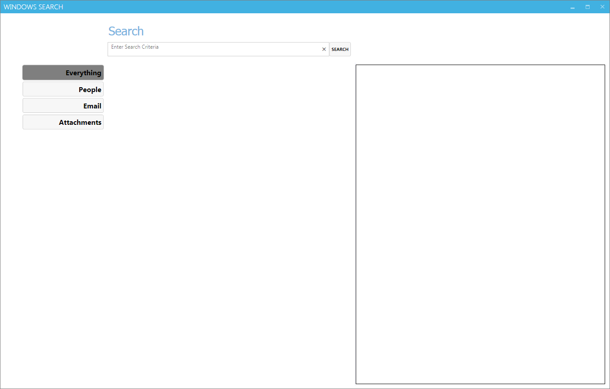

Outlook Finder Plugin
Outlook Finder
Welcome to GitHub Pages.
Download
ClickOnce
ClickTwice
Screenshots
Plugin in Outlook

StandAlone application
Outlook Finder Plugin gui maintained by Fruitfactory. Published with
GitHub Pages